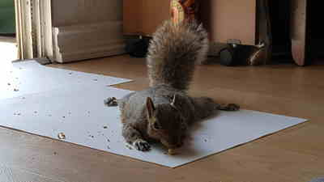
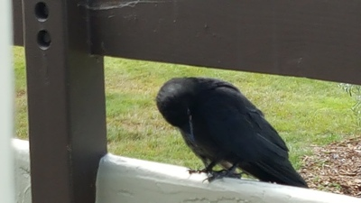

Squirrels
Several years ago, my husband and I formed a special bond with a squirrel who "adopted" us, as her human companions. We named her Racqui (pronounced like "rocky," short for Raquel). For three years, she came to visit us daily in our condo unit, on the second floor. There, as well as outdoors, we got to know each other quite well. In the process, our respect for squirrels grew immensely. If you would like a short and very entertaining introduction to the intelligence of squirrels, you might want to check out this amazing YouTube video.
Crows
More recently, we have developed a close relationship with a family of five crows who nest across the street from us: mother, father and three offspring. The image above shows one of the babies on our balcony ledge, reminding us that it is feeding time. One of my special interests is anthrozoology, the subset of ethnobiology that deals with interactions between humans and other animals. I'm especially interested in human-animal communication. We also enjoy observing how the squirrels and crows around us relate to each other!